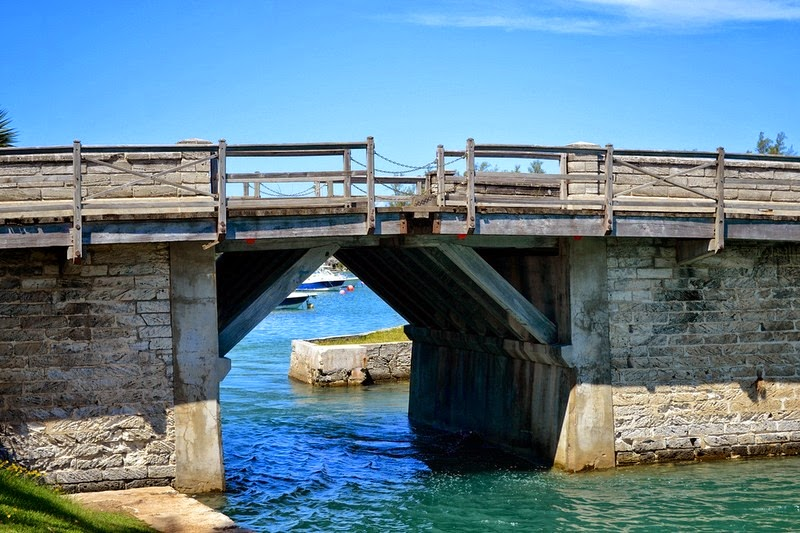
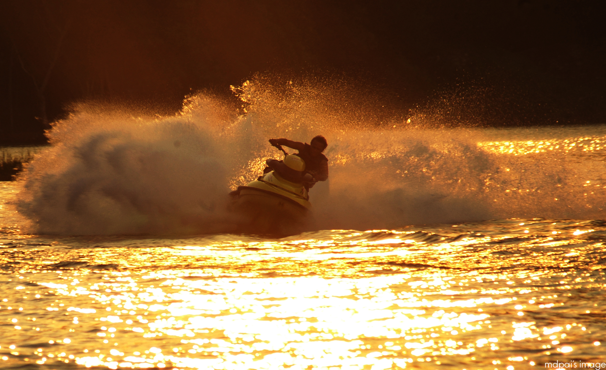

Ossito purchased group jetski tour tickets and went jetskiing in the bermuda sea with his girlfriend.
 “Jetskiing”
by
Tyler Bell
is licensed under
CC BY 2.0
“Jetskiing”
by
Tyler Bell
is licensed under
CC BY 2.0
They went under the somerset bridge and bounced up and down rough waves.

"somerset bridge" by nathanmac is licensed under cc by 2.0"
The speed and the adrenaline rush went over his head and he started speeding past the limit. His girlfriend got scared because they were bears and they didnt know how to swim. They toppled over and fell in the water but, the life jackets saved them. ossito started crying and vowed to never go past the speed limit. Nevertheless, they had a lot of fun and made great memories and learnt good lessons.

“jetski”
by
fairuz othman
is licensed under
CC BY 2.0
go to homepage